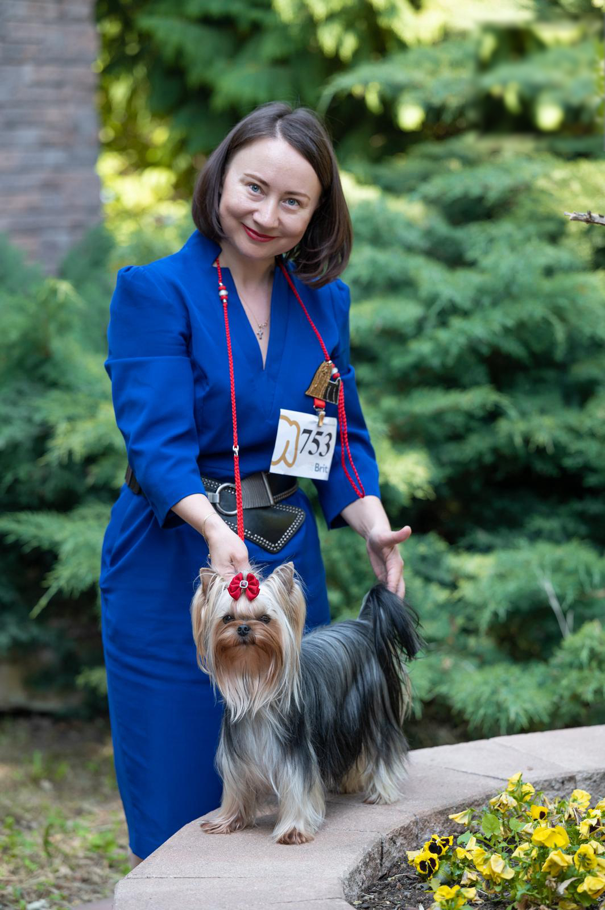

Vítejte v chovatelské stanici Great Silkyway. Chováme Yorkshire teriéry s důrazem na zdraví, povahu a krásu. Každé štěně vyrůstá v rodinném prostředí s láskou a odbornou péčí.

Chovatelská stanice Great Silkyway vznikla z čisté lásky k Yorkshire teriérům. Chov je pro nás nejen koníčkem, ale posláním — přivést na svět zdravá, dobře socializovaná štěňata, která budou radostí celých rodin.
Naši chovatelé jsou registrováni u FCI a ČMKU. Každý náš chovný pes prochází komplexním zdravotním testováním včetně DNA analýzy, aby se zajistilo, že předávají svým potomkům jen to nejlepší.
Seznamte se s hvězdami naší stanice — chovnými fenami a psy s výbornými výsledky z výstav a zdravotními prověrkami.
Šampionka s nádhernou hedvábnou srstí a přátelskou povahou. Matka mnoha úspěšných vrhů.
Šampion mnoha zemí, výjimečná pigmentace a typ. Přenáší výbornou stavbu těla i charakter.
Nejmladší chovná fena s velkým potenciálem. Výjimečná srst zlatavé barvy a hravá povaha.
Hledáte svého nového čtyřnohého přítele? Podívejte se na naše aktuálně dostupná štěňata s průkazem FCI.
Krátký pohled do každodenního života naší chovatelské stanice.
Přečtěte si zkušenosti lidí, kteří si od nás přijali yorkshire teriéra.
Naše Mia je naprostý poklad. Přišla k nám perfektně socializovaná a zdravá. Komunikace s chovatelkou byla od začátku do konce naprosto skvělá.
Profesionální přístup na každém kroku. Pes má nádherný papír, byl naočkovaný, odčervený a perfektně zvyklý na lidi. Doporučuji celým srdcem!
Čekali jsme na štěně několik měsíců a stálo to za to. Chovatelka nás průběžně informovala fotkami. Náš Max je zdravý a úžasně temperamentní.